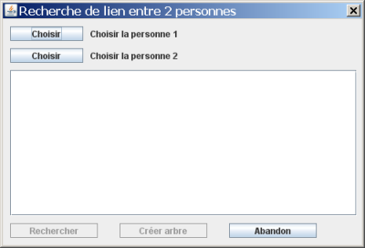
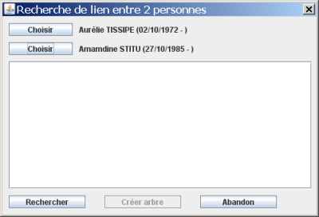
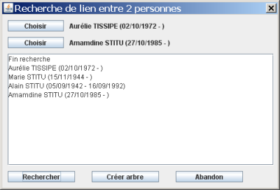
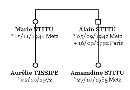
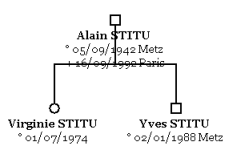

GénéGraphe vous permet de rechercher s'il existe un lien entre deux personnes. Puisque vous allez ajouter plusieurs personnes à votre arbre, cette fonction n'est possible que quand votre arbre est vide. Pour faire la recherche de lien, allez dans le menu Personnes et choisissez « Recherche lien ». Vous obtenez la fenêtre suivante :

Il vous faut choisir les deux personnes concernées par la recherche. Cliquez sur un bouton « Choisir » et sélectionnez la personne que vous voulez.

Quand vous cliquez sur « Rechercher », GénéGraphe fait la recherche. Si un lien existe entre ces deux personnes, il s'affiche dans le bas de la fenêtre.

Le bouton « Créer arbre » est alors utilisable. Quand vous cliquez dessus, les personnes se positionnent dans la page en cours.

Dans l'exemple ci-dessus, Marie STITU et Alain STITU sont frères et sœurs. Dans le cas de demi-frères ou de demi-soeurs, le lien passe obligatoirement par le parent commun aux deux enfants :
